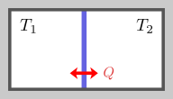

2つの容器を接触させると、やがて温度が等しくなって変化しなくなる。この時の温度が知りたい。平衡状態一般に、容器などをしばらく放置すると、マクロな物理量が変化しない定常な状態になる。この状態のことを平衡状態という。「平衡状態での各物理量がどうなっているかを求めること」が、熱力学の主な目的の1つである。
熱接触した後の温度は式(1), (2)から決まる

右図のように、異なる温度
𝑇1,𝑇2
を持つ2つの容器（部屋）を用意し、接触させる。そのまましばらく放置すると、両者の温度は等しくなることが経験的に知られている（平衡状態）。この時の温度
𝑇′1,𝑇′2
（
𝑇′1=𝑇′2
）が知りたい。右図の
↔𝑄
という表記は、壁が熱を通すことを示す（熱力学では熱を
𝑄
で表す）。外部の壁は熱を通さないとする。
この実験には再現性がある
この実験には再現性があることが知られている。即ち、同じ容器・内容物のもとで、同じ初期温度
𝑇1,𝑇2
で実験を行うと、平衡状態の温度
𝑇′1,𝑇′2
はいつも同じ値になる。
𝑇′1,𝑇′2
は、
𝑇1,𝑇2
の関数となるわけである。再現性は、物理法則の現れに他ならない。物理学の理論を構築する際の基本戦略は、再現性のある実験に着目し、測定結果を再現する理論を探すことである。実際、力学編でも、投げたボールの運動に再現性があることを議論の起点として、運動方程式を見つけたのだった。
解くべき条件式(1), (2)
さて、未知数は平衡状態での温度
𝑇′1,𝑇′2
の2つなので、これを求めるには、2つの条件式が必要である。まず、温度が等しくなるのだから
𝑇′1=𝑇′2(等温条件)(1)
が成り立つ。加えて、電磁気学編の第7章で述べたように、系全体のエネルギーは常に保存するので、2つの容器を合わせた全体のエネルギー
𝑈total=𝑈1+𝑈2
が保存するはずである：
𝑈1+𝑈2=𝑈′1+𝑈′2(エネルギー保存則)(2)
𝐸
と
𝑈
重力などの外力に由来するポテンシャルエネルギーを含む全エネルギーを
𝐸
で表すのに対して、
𝑈
は内部エネルギーを表す。熱力学では、外力は影響しないことが多いので、エネルギーを
𝑈
で表すのが慣例である。ただし、第6章では重力の影響を考えるので、全エネルギー
𝐸
が登場する。
エネルギー関数 𝑈𝑇 の測定が必要
式(1)と式(2)を連立して解けば、2つの未知数
𝑇′1,𝑇′2
が確定する。ただしこれを解くには、エネルギー保存則(2)を温度に関する方程式にする必要がある。即ち、各容器について、温度
𝑇
からエネルギー
𝑈
を決める関数
𝑈𝑇
（エネルギー関数と呼ぶことにする）を実験的に求めておかなければならない。関数の略記法
𝑈𝑇
は関数
𝑈(𝑇)
の略記である。熱力学では引数が多くなりがちなので、
𝑈(𝑇,𝑉,𝑁1,𝑁2)
などについても、
𝑈𝑇𝑉𝑁1𝑁2
と略記することにする。
温度の定量化から始めよう
とはいえその前に、温度という概念自体、ここ（熱力学編）で初めて出てきたものなので、理論的に扱うにためは定量化しておく必要があるだろう。この章では、これらについてそれぞれの節で述べた上で、理想気体の場合に冒頭の問題を解く。1.1温度の定量化1.2エネルギー関数の測定1.3理想気体の場合の解
1.1温度の定量化
温度の定量化とは、要するに、温度計の目盛り（物理学的に言えば単位）を決定することである。温度が等しいとか、どちらが熱いか（冷たいか）といった比較だけであれば、目盛りとは無関係に成り立つ。これを数値で比較できるようにするのが定量化である。この節では、扱いやすい温度の定量化として、理想気体温度単位を導入する。
温度は無矛盾であるとする
温度という概念が矛盾なく定義できることは、（第5章までは）経験則として認めることとする。例えば、ある2つの容器の温度を測った時に、「ある温度計では両方とも同じ温度なのに、別の温度計ではそれぞれ違った温度になる」といったことは起きない。
1.1.1「温度で体積が変わる物質」から温度計が作れる
温度を測る装置である温度計を作りたいわけだが、温度計それ自体は身近なものである。
温度と体積を関係付ければよい
身の回りの温度計でどのように温度を測っているかというと、例えば棒温度計であれば、棒ガラスの中に閉じ込められた感温液（ケロシン、水銀、アルコールなど）の体積が、温度によって変化する性質を利用している。体積に応じて目盛りを割り振ることで温度計が作れる。
体積に比例するように取るのが単純
もちろん、どのように定量化するか（＝目盛の振り方）には任意性があるわけだが、最も単純なのは
体積に比例するように温度目盛りを定義する(3)
ことだろう。これは、日常で使われているセルシウス温度単位（1気圧下での氷の融点で
0∘C
、沸点で
100∘C
になる）とは異なるものである。そうではなく今は、熱力学的に自然な単位の取り方を考えている。
しかし、温度目盛りが物質に依存してしまう
しかし、体積の変化率は感温液によって異なるため、何を感温液として採用するかによって温度の定量化が異なってしまう。温度を測って比較するだけであれば、どれか1つの感温液を固定してしまえば問題はない。しかし、特定の物質に依存してしまうのは、理論的には好ましくない（これから熱力学の理論を構築していこうとしているので）。実は、物質ごとの特性が無視できる好都合なものが知られている。それが、次に述べる理想的な気体である。
1.1.2理想気体を使って温度を定量化できる：式(4)
一般に、気体は、温度を変化させると体積が大きく変わるので、温度との対応付けには適している。
理想気体を使うと、物質に依らない温度の定量化ができる
気体の場合、十分密度が小さく、温度が高ければ、温度を変化させた時の体積の変化率が気体の種類にほぼ依存しなくなることが知られている。そのような気体を用いて定義(3)から温度目盛りを作ると、気体の種類によらず、よい近似で温度目盛りがほぼ一致するわけである（ただし、温度目盛りを割り振る際、気体の圧力は常に一定に保つ）。理想気体このように、十分密度が小さく、温度が高い気体は、その気体に固有の特徴を失っていく（温度と体積の関係という意味で）。このように個性を失った極限としての仮想的な気体を、理想気体と呼ぶ。常温・常圧の空気は、理想気体とみなせる。
理想気体による温度の定量化
理想気体を用いて定義(3)で定量化された以下の温度目盛りを、理想気体温度単位という：
𝑇=273.15𝑉0∘C𝑉𝑇[K](4)
単位記号は
K
であり、ケルビンと読む。
𝑉𝑇
は温度
𝑇
における理想気体の体積である。
𝑉0∘C
は「1気圧での氷の融点」での体積である。なお、体積
𝑉
は温度だけでなく圧力にも依存するので、圧力は適当な値に固定しておく必要がある（どの値に固定しても目盛りは同じになることが知られている）。式(4)の比例係数の半端な値
273.15
は厳密な値である。実際、1気圧での水の沸点と凝固点の温度差が（セルシウス単位の場合に
100∘C
になるのに合わせて）ほぼ
100𝐾
になるように決められた定義値である（以下の【1.1-注1】を参照）。
【1.1-注1】セルシウス単位
セルシウス単位は、（
∘C
を単位記号に持つ）日常的に用いられている単位である。ケルビン単位との関係は以下のようになる：
𝑇[K]=𝑇[∘C]+273.15(5)
例題例えば、
𝑇=100∘C
の場合
100∘C[K]=100∘C[∘C]+273.15∴100∘C=373.15K
補足
現在では、ケルビン単位が先にあって、セルシウス単位をこの式で再定義するという形になっている。式(5)が等号になっているのはそのためである。原点の位置が異なるだけであり、
1K
の間隔は、
1∘C
の間隔と同じになる。
1.1.3これ以降は理想気体温度単位を採用する
これ以降、温度単位として、理想気体温度単位を使うことにする。
理想気体温度単位にも問題がある
もちろん、この定量化には不満がないわけではない。理想気体自体は存在しないのだから、理想気体温度単位を実験的に厳密に決めることは、原理的にできない。さらに言えば、実在の気体は温度を下げていくと理想気体から外れていく（あるいは液体／個体になる）ので、極低温において、実験的に理想気体温度を決めることは近似的にすら難しい。第4章の予告熱力学的に自然な温度の定量化を見つけることは、熱力学の大きな目標の一つであり、第4章の熱力学温度単位によって達成される。そこでも説明するが、熱力学温度単位は、理想気体温度単位と一致するので、区別する必要はない。（大きな違いは、温度計の目盛りを厳密に割り振ろうとした際に、理想気体温度単位では理想気体を用意する必要があるのに対し、熱力学温度単位では原理的には任意の物質で可能という点である。）
1.2エネルギー関数の測定
冒頭でも述べた様に、エネルギー
𝑈
と温度
𝑇
を結び付ける関数
𝑈𝑇
を、エネルギー関数という。手をこすると暖かくなることからも分かるように、エネルギーを与えると温度が上げることができるので、このような関係式が存在することはもっともらしい。冒頭の問題を解くには、
𝑈𝑇
が分かればよいのであった。この節では、このエネルギー関数
𝑈𝑇
を実験的に決定する方法について述べる。
1.2.1微小変化の測定 ⇒ 熱容量 ⇒ エネルギー関数(7)が決まる
エネルギー関数
𝑈𝑇
を決めたいわけだが、エネルギーの絶対値を直接測定することはできない。こういう時には、微小変化を考えるのがお決まりである。電磁力学編の第7章で見たように、関係式
𝐸=𝑚𝑐2
が成り立つので、質量
𝑚
からエネルギーを決めることもできるはずだが、質量の測定精度に比べて変化が小さすぎて現実的ではない。
熱容量を測定すれば、 𝑈𝑇 に対する微分方程式が得られる
即ち、微小なエネルギー
𝛿𝑈
を容器に与え、その時の温度変化
𝛿𝑇
を測定する。そうすれば、1次近似：
𝛿𝑈≐𝑈˙𝑇𝛿𝑇(6)
によって、熱容量と呼ばれる量
𝑈˙𝑇
が求まる。これが、エネルギーと温度を関係づける最も基本的な量である。後は、様々な
𝑇
で式(6)の測定を行うことで、
𝑈˙𝑇
の関数形を確定させればよい。
𝑈˙𝑇
という記法は、
𝑈𝑇
を
𝑇
で微分することを表す（以下の【1.2-注1】）。熱容量は、直感的には、温度を
1K
上げるのに必要なエネルギーである。
微分方程式(6)を積分すれば 𝑈𝑇 が得られる
熱容量
𝑈˙𝑇
が確定すれば、エネルギー関数
𝑈𝑇
は、式(6)を積分することで求められる：
𝑈𝑇=𝑈𝑇0+∫𝑇𝑇0𝑈˙𝑇′𝑑𝑇′(7)
𝑇0
は積分の起点となる温度である（典型的には、一連の式(6)の測定を開始した温度）。
𝑈𝑇0
は定数であるが、エネルギーには定数を足す自由度があるので、任意の値を与えればよい。実際、エネルギー保存則(2)の中では定数
𝑈𝑇0
は相殺するので、効いてこない。
【1.2-注1】偏微分の略記
関数
𝐹(𝑋,𝑌)
を
𝐹𝑋𝑌
と略記し：
𝐹𝑋𝑌≡𝐹(𝑋,𝑌)
その偏微分を、引数
𝑋,𝑌
にドットを付けて表す。例えば：
𝐹˙𝑋𝑌≡𝜕𝜕𝑋𝐹𝑋𝑌𝐹¨𝑋𝑌≡𝜕2𝜕𝑋2𝐹𝑋𝑌𝐹˙𝑋˙𝑌≡𝜕𝜕𝑌𝜕𝜕𝑋𝐹𝑋𝑌=𝜕𝜕𝑋𝜕𝜕𝑌𝐹𝑋𝑌(8)
この表記法は一般的なものではない。最後の式(8)を使うのは、偏微分が順序によらない（＝2階全微分可能な）場合のみである。
補足
1複数の項がある場合
複数の項をまとめて書く場合もある。例えば、
𝐹+𝐺𝐻
を
𝑋
で微分したものは、以下のように書く：
(𝐹+𝐺𝐻)˙𝑋𝑌
21次近似
関数
𝐹𝑋𝑌
の1次近似
𝛿𝐹𝑋𝑌
（全微分ともいう）は、以下のように書ける：
𝛿𝐹𝑋𝑌≐𝐹˙𝑋𝑌𝛿𝑋+𝐹𝑋˙𝑌𝛿𝑌
≐
は1次近似であることを表す（力学編の【1.1-注1】参照）。
1.2.2エネルギー保存則(2)が、温度に対する方程式になった
式(7)によりエネルギー関数
𝑈𝑇
が決まれば、冒頭の問題のエネルギー保存則(2)は
𝑈𝑇1+𝑈𝑇2=𝑈𝑇′1+𝑈𝑇′2(9)
のように、温度に対する方程式になる。よって、等温条件(1)、エネルギー保存則(9)ともに温度だけの関係式になり解くことができる。略記法容器ごとにエネルギー関数の関数形は異なるので、
𝑈(1)𝑇1,𝑈(2)𝑇2
などと書いたほうが曖昧さがない。しかし、下添え字で区別できるので
𝑈𝑇1,𝑈𝑇2
のように略記する。こうしないと、後の章で変数が増えた時に見づらくなる。この略記法は今後も、熱力学編を通して使う。
1.3理想気体の場合の解
この節では、理想気体の場合について、冒頭の問題を解く。そのためには、理想気体のエネルギー関数
𝑈𝑇
を与えればよい。方針まず、熱容量(10)を与え、積分(7)によってエネルギー関数(11)を求める。
1.3.1理想気体のエネルギー関数：式(11)
実験的に、理想気体に近い気体の熱容量
𝑈˙𝑇
は、温度にほぼ依存しないことが知られている。もちろん、
𝑈˙𝑇
は気体の種類・量には依存する。今はこれらは変化しないので、無視している。
熱容量 ⇒ エネルギー関数
よって理想気体では、
𝑈˙𝑇
は定数だとみなす。この値を
𝐶
とおく：
𝑈˙𝑇=𝐶=const.(10)
後はこの熱容量を式(7)によって積分すれば、理想気体のエネルギー関数
𝑈𝑇
が得られる：
𝑈𝑇=𝐶𝑇(11)
導出式(7)にそのまま代入すると
𝑈𝑇=𝑈𝑇0+𝐶(𝑇−𝑇0)
となるが、エネルギー原点の任意性を利用して
𝑈𝑇0=𝐶𝑇0
とすれば式(11)になる。
1.3.2理想気体の場合の解：式(12)
エネルギー関数(11)を使って、理想気体の場合の冒頭の問題を解くことができる。その解は、以下の【1.3-注1】の式(12)である。
【1.3-注1】理想気体容器の熱接触
理想気体が入った2つの容器を熱的に接触させて放置した時、平衡状態での各容器の温度それぞれ
𝑇′1,𝑇′2
は
𝑇′1=𝑇′2=𝐶1𝑇1+𝐶2𝑇2𝐶1+𝐶2(12)
となる。ただし、初期状態の各容器の温度をそれぞれ
𝑇1,𝑇2
、同じく熱容量をそれぞれ
𝐶1,𝐶2
とする。2つの容器が同じものであれば、
𝑇′1=𝑇′2=(𝑇1+𝑇2)/2
となり、ちょうど平均値になる。
導出
解くべき方程式は、等温条件(1)：
𝑇′1=𝑇′2(13)
および、エネルギー保存則(9)：
𝑈𝑇1+𝑈𝑇2=𝑈𝑇′1+𝑈𝑇′2∣
∣
∣
∣
∣エネルギー関数(11)：{𝑈𝑇1=𝐶1𝑇1𝑈𝑇2=𝐶2𝑇2を代入𝐶1𝑇1+𝐶2𝑇2=𝐶1𝑇′1+𝐶2𝑇′2(14)
である。後は、式(13)と式(14)を連立して
𝑇′1,𝑇′2
を求めれば、式(12)になる。
◼